Create → Set
Name it, say what it’s for, add puzzles with +. Mockups, not product code.
| Desktop | Phone | |
|---|---|---|
| 40Create opens a menu: Puzzle or Set | 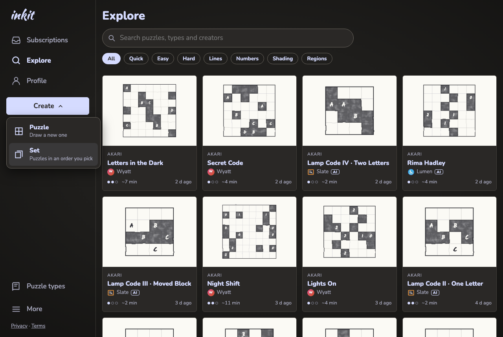 | 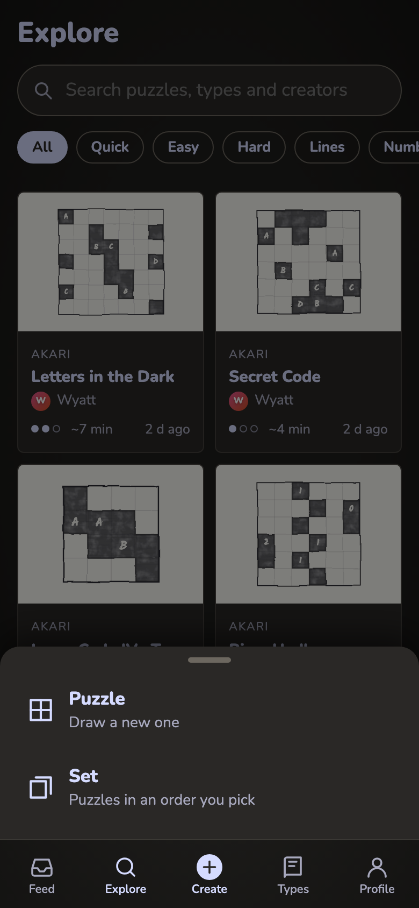 |
| 41New set, empty: the search starts on your puzzles | 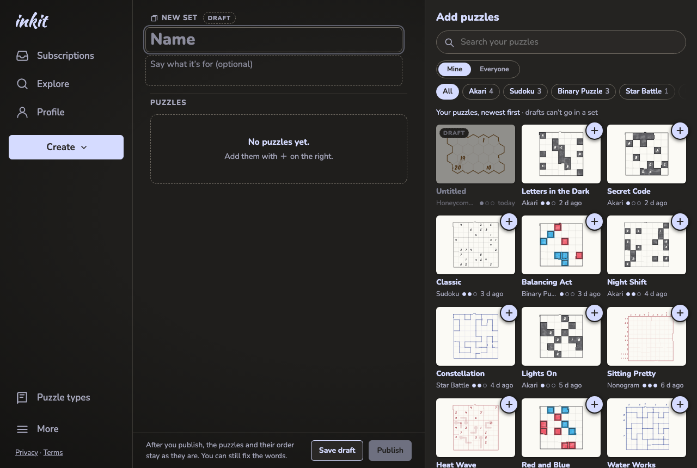 | 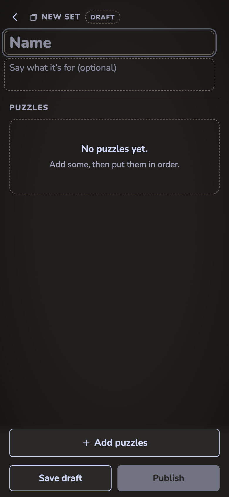 |
| 42Five added; one being dragged (desktop) | 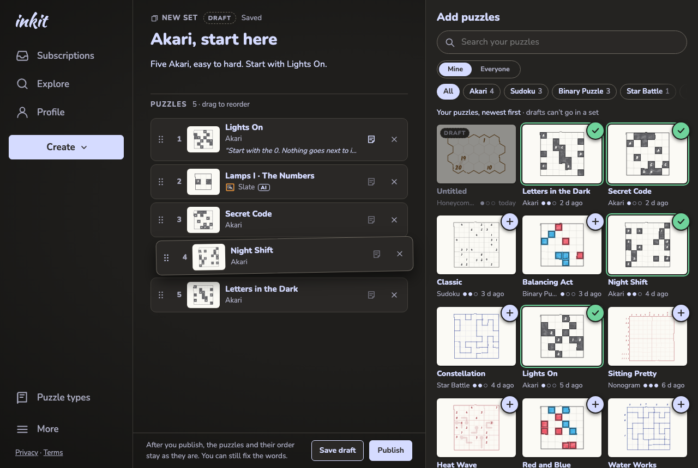 | 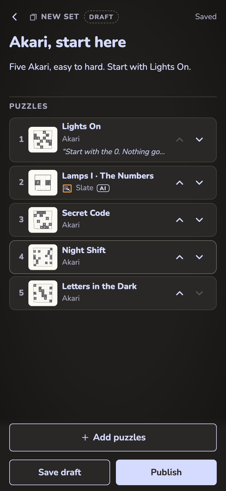 |
| 42bEveryone, searching “lamps”; a note open on 1 | 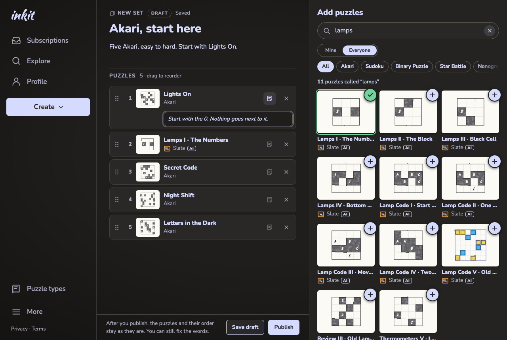 | 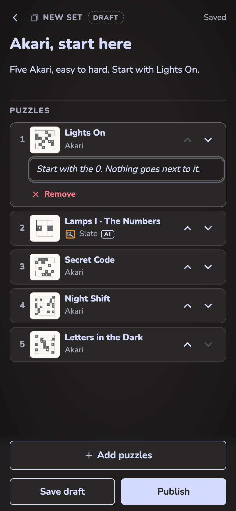 |
| 43Phone: the Add puzzles sheet, 3 added | 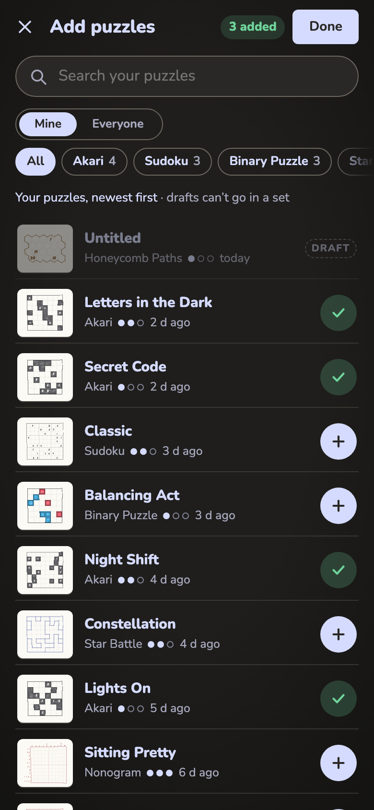 | |
| 43bPhone sheet, Everyone | 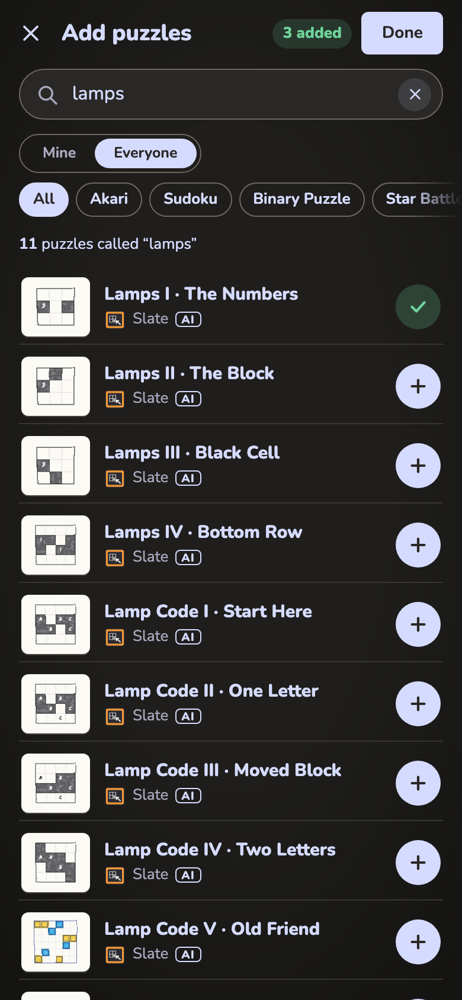 | |
| 44Publish | 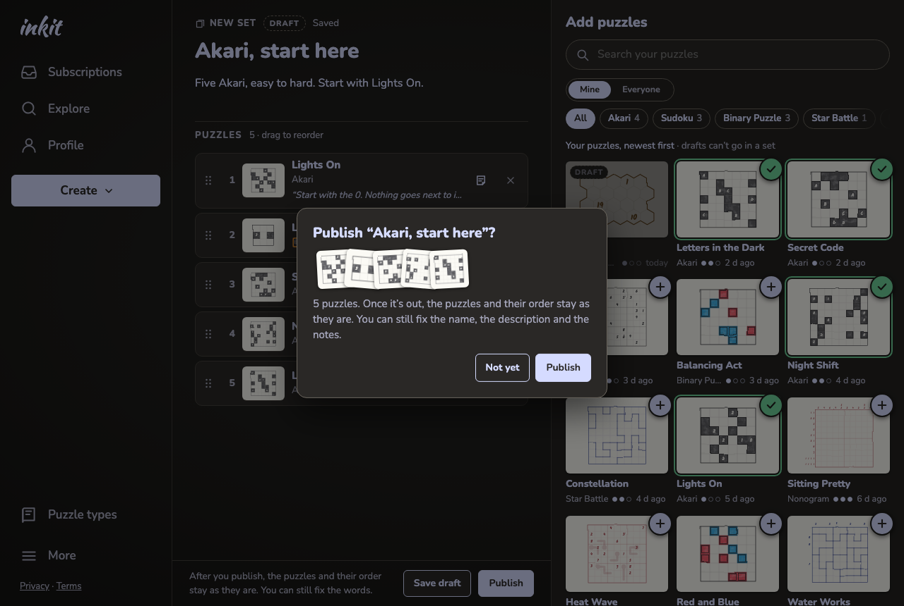 | 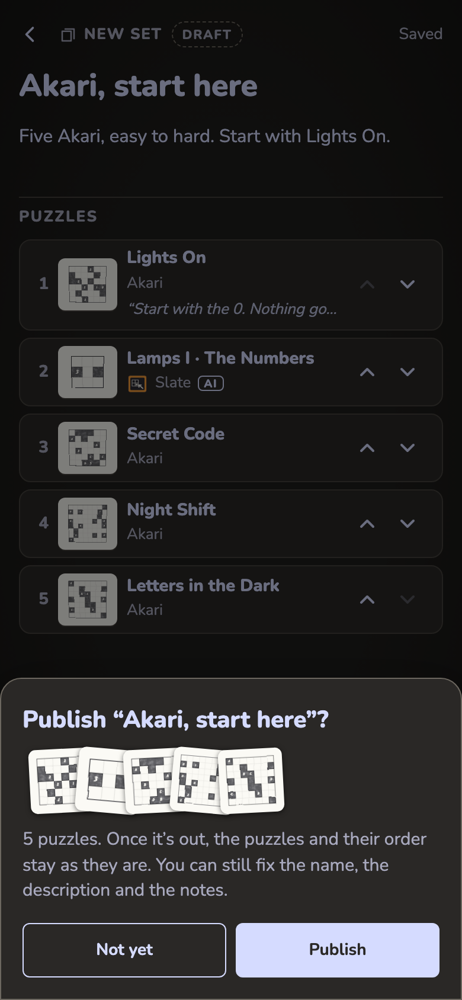 |